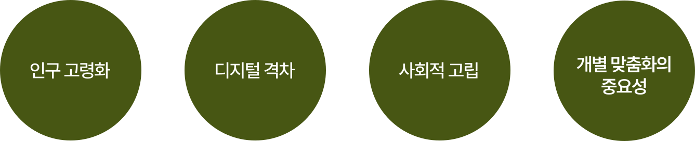
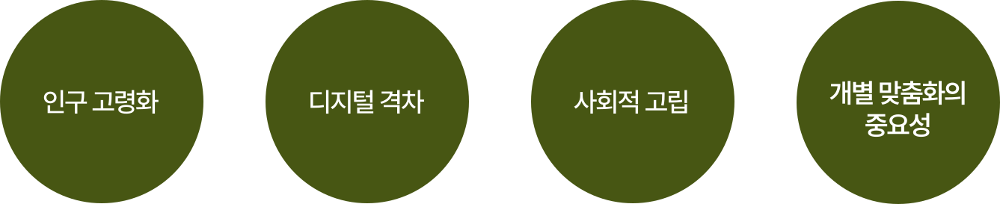

| Background
“”
“”
“”
“”


시장 기회
&
주 타겟인 시니어들의 고충

“시니어를 위한 트렌드 지침서 & 라이프 스타일 구축 서비스 제공”
오래된 친구처럼 친근하게
그리고 트렌디를 넘어서...

"지혜와 경험이 꽃피는 황금기,
당신의 삶을 더욱 찬란하게!"
트렌디 시니어 서비스는 당신의 소중한 시간을 더욱 가치 있게 만듭니다.
오랜 세월 쌓아온 지혜와 경험을 바탕으로 새로운 도전과 즐거움을 선사합니다.
건강과 행복을 최우선으로 고려한 맞춤형 프로그램, 최신 트렌드를 반영한 라이프스타일 제안,
그리고 당신의 이야기를 존중하는 따뜻한 소통, 지금 바로 만나보세요!
| Background
“”
“”
“”
“”

시장 기회
&
주 타겟인 시니어들의 고충

“시니어를 위한 트렌드 지침서 & 라이프 스타일 구축 서비스 제공”
| Naming
왜? "Buddy." 인 것인가
동료, 단짝, 형제라는 뜻으로, "Buddy"는 "Friend"보다 격식이 낮아
훨씬 더 친근감 있는 표현입니다.
주 사용자인 시니어분들이 이 앱을 친구처럼 편하게 쓰길 바라고 또
자주 애용해줬으면 하는 바램으로 "Buddy"라는 이름을 붙였습니다.
트렌디함을 넘어서 이젠
Buddy.는 뉴스, 트렌드, 플렌, 헬스 총 4가지의 기능과 함께 시니어분들께서 보다 더 편리하고
유용한 정보들을 쉽게 접근 할 수 있도록 설계된 앱 서비스입니다.
시니어분들을 위한 여러 트렌드 관련 정보를 제공해줄 뿐만 아니라 본인 스스로
정보를 선택 할 수 있도록 유도하고,
본인 맞춤형으로
라이프 스타일을 구축 할 수 있도록 도와드립니다.
| Keyword
친근한
재미있는
트렌디
스마트 시니어
평생학습
라이프 스타일
편리하게